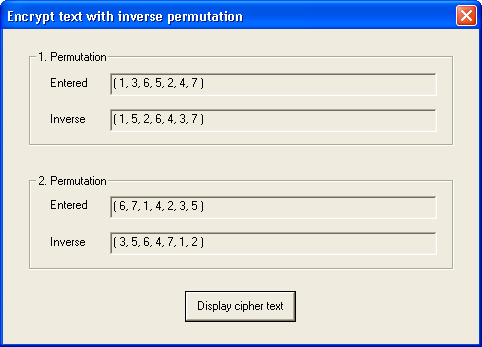

This dialog provides information on the two permutations that are used to encrypt or decrypt the active document. In the dialog box Used Permutation and its Inverse you can gather information on encryption using permutation. Further particulars about the key input dialog are mentioned in the dialog box Permutation Key Input.
The first field shows the 1st permutation displayed in numbers, the following field its inverse. Accordingly, the 3rd field contains the 2nd permutation and the 4th field its inverse.
If you use the inverses of the permutations when encrypting a document, the result is the same as if you decrypt the document without using the inverses.
Accordingly, encrypting a document without using the inverted permutations and decrypting a document using the inverses result in the same ciphertext.
The title of this dialog states whether the entered permutation or its inverse is used: